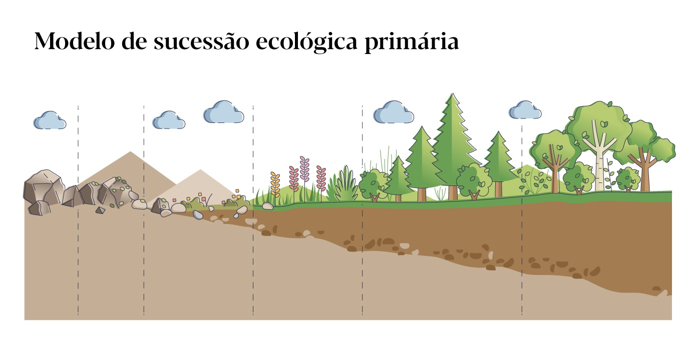
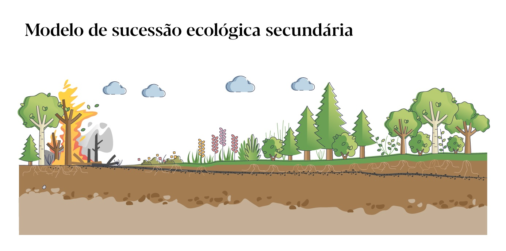

Sucessão Ecológica
Os ecossistemas não são entidades fixas, estáticas no tempo.
Ao contrário, estão em constante modificação.
Como se fossem organismos vivos, passam por vários estágios, desde
a juventude até maturidade.
Chamamos sucessão ecológica ao
processador de mudanças gradativas na constituição das comunidades
que se sucedem no ecossistema.
Características Estruturais de uma Comunidade
Composição específica (espécies existentes);
Abundância das
espécies;
Frequência relativa das espécies;
Fidelidade
das espécies (migrar ou não);
Periodicidade das espécies;
Estratificação e zonação;
Diversidade da comunidade.
Dinâmica da Comunidade
Sucessão ecológica: sequência gradual de estágios do desenvolvimento de uma comunidade ao longo do tempo, desde seus estágios iniciais até seu completo desenvolvimento.
Numa área resultante da queimada, por exemplo, quando abandonada, podem-se observar as etapas da sucessão ecológica: inicialmente, surgem gramíneas rasteiras, recobrindo o solo nu. Posteriormente aparecem arbustos. Com isso, o solo já não está mais muito aquecido e superiluminado, conservando melhor sua umidade. Com as modificações do solo, certas sementes que não podiam germinar agora podem.
Aparecem, com isso, as primeiras árvores. Ressurge a mata. Juntamente com as gramíneas e arbustos, os insetos e outros animais também aparecem e levam junto seus predadores.
Com essa lenta e progressiva sucessão, acaba se estabelecendo a chamada comunidade clímax, que será estável.
Sucessão Primária
Ocorre em ambientes onde não havia solo ou vida anteriormente,
como em áreas devastadas por erupções vulcânicas ou glaciares.
Nesse processo, os organismos pioneiros, como líquens e
musgos, colonizam o ambiente, formando solo e permitindo que
outras espécies se estabeleçam.

Sucessão Secundária
Acontece em áreas onde já existia vida, mas que foram perturbadas
por eventos como incêndios, desmatamentos ou inundações.
Nesse caso, o solo já está presente, e a recuperação da
comunidade é mais rápida, pois as sementes e raízes remanescentes
que podem facilitar o reestabelecimento da vegetação.
